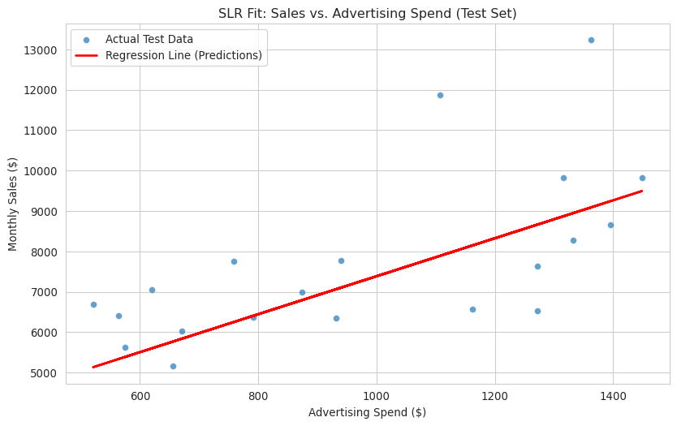
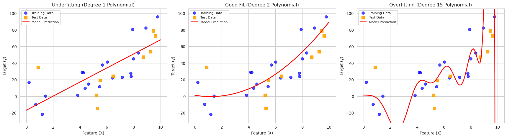

Introduction to Machine Learning and Linear Regression
Descriptive & Inferential Statistics for Business Analytics
Author
Affiliation
Dr. Smith
University of South Florida
Introduction to Machine Learning and Linear Regression
Last session, we wrestled with hypothesis testing, using t-tests to see if observed differences in our data, like between two marketing strategies, were statistically significant or likely due just to random chance. We were asking questions like, “Is group A different from group B?”
Today, we pivot from looking at differences to understanding relationships and making predictions. We’re entering the exciting world of Machine Learning (ML). Don’t let the term intimidate you! It’s a powerful set of tools that allow computers to learn patterns from data, and it’s becoming absolutely essential in modern business analytics.
Our goal today is to understand the basics of ML, focusing on a fundamental technique called Linear Regression. We’ll see how we can use it to model the relationship between variables – like how advertising spend might influence sales, or how website engagement metrics might predict conversion rates. We’ll cover:
What Machine Learning is (focusing on Supervised Learning).
Simple Linear Regression: Modeling a relationship with one predictor.
Train-Test Split: A crucial step for evaluating model performance realistically.
Evaluating our model using metrics like R-squared.
Multiple Linear Regression: Expanding our models to include multiple predictors.
Plenty of practical examples and code using Python’s pandas, numpy, and scikit-learn.
Let’s get started by demystifying Machine Learning.
Learning Objectives
By the end of this lecture, you should be able to:
Define Machine Learning (ML) and differentiate between supervised and unsupervised learning.
Explain the goal and mechanics of Simple Linear Regression (SLR).
Explain the critical importance of the Train-Test Split and implement it.
Implement SLR using Python’s scikit-learn.
Interpret the coefficients (slope and intercept) of an SLR model.
Evaluate an SLR model using R-squared.
Explain the concept and implementation of Multiple Linear Regression (MLR).
Interpret coefficients in an MLR context.
Use trained linear regression models to make predictions.
Understand the practical business applications of linear regression.
Introduction: From Differences to Relationships and Predictions
In our last session, we explored hypothesis testing (specifically t-tests). We focused on determining if the difference between group means (e.g., average sales under Plan A vs. Plan B) was statistically significant. This is crucial for A/B testing and comparing distinct scenarios.
Today, we shift gears. We’re moving from asking “Is there a difference?” to asking “How are these variables related?” and “Can we predict an outcome based on certain factors?” This is where Machine Learning (ML) comes into play.
ML provides tools to build models that learn from data. Instead of explicitly programming rules for every scenario, we let the algorithm discover patterns and relationships. This is incredibly useful in business for tasks like:
Forecasting future sales based on past trends and marketing spend.
Predicting customer churn based on their behavior.
Estimating the price of a house based on its features.
Understanding which factors drive employee performance.
We’ll start with one of the most fundamental supervised ML techniques: Linear Regression.
What is Machine Learning?
Machine Learning (ML) is a field of Artificial Intelligence where systems learn from data to identify patterns and make decisions with minimal human intervention.
Types of Machine Learning
We’ll primarily encounter two main types:
Supervised Learning:
Goal: Predict a specific, known target outcome based on input features.
Data: Requires “labeled” data, where we know the correct output for each input example.
Analogy: Like learning with a teacher who provides the answers (labels).
Examples: Predicting sales (target) based on advertising spend (feature); classifying an email as spam/not spam (target) based on its content (features).
Linear Regression and Logistic Regression fall here.
Unsupervised Learning:
Goal: Discover hidden structures, patterns, or groupings in data without a predefined target.
Data: Uses “unlabeled” data.
Analogy: Like learning without a teacher, finding patterns on your own.
Examples: Customer segmentation (finding natural groups of customers); anomaly detection (finding unusual data points).
Our focus today is Supervised Learning, specifically for predicting continuous numerical values using Linear Regression.
Simple Linear Regression (SLR): Modeling with One Predictor
SLR aims to model the linear relationship between a single independent variable (predictor, feature - X) and a continuous dependent variable (target, outcome - Y).
The Goal: Find the best-fitting straight line through the data points on a scatter plot.
The Equation:Y = β₀ + β₁X + ε
Y: Dependent Variable (what we predict, e.g., Sales)
X: Independent Variable (what we use to predict, e.g., Advertising Spend)
β₀: Intercept (Predicted Y when X=0)
β₁: Slope (Predicted change in Y for a one-unit increase in X)
ε: Error Term (Difference between actual Y and predicted Y)
The algorithm (typically Ordinary Least Squares - OLS) finds the β₀ and β₁ that minimize the sum of the squared errors (ε²).
Mini-Case 1: Advertising Spend vs. Sales
Let’s revisit our retail company example. They want to predict monthly sales based on advertising spending.
# Setup: Import necessary librariesimport pandas as pdimport numpy as npimport matplotlib.pyplot as pltimport seaborn as snsfrom sklearn.linear_model import LinearRegressionfrom sklearn.model_selection import train_test_splitfrom sklearn.metrics import mean_squared_error, r2_score, mean_absolute_error# Set a style for plotssns.set_style("whitegrid")print("Libraries imported.")# Generate sample data for SLRnp.random.seed(42) # for reproducibilityad_spend = np.random.rand(100) *1000+500# 100 data points nowsales =2000+5.5* ad_spend + np.random.randn(100) *2000# Increased noise a bitdf_sales = pd.DataFrame({'AdvertisingSpend': ad_spend, 'Sales': sales})print("--- Mini-Case 1: Sales Data ---")print(df_sales.head())# Visualizeplt.figure(figsize=(8, 5))sns.scatterplot(x='AdvertisingSpend', y='Sales', data=df_sales)plt.title('Monthly Sales vs. Advertising Spend')plt.xlabel('Advertising Spend ($)')plt.ylabel('Monthly Sales ($)')plt.show()
We see a positive linear trend, suggesting SLR is appropriate.
Preparing Data (Features X, Target y)
X_sales = df_sales[['AdvertisingSpend']] # Feature DataFrame (2D)y_sales = df_sales['Sales'] # Target Series (1D)print("\nShape of X_sales:", X_sales.shape)print("Shape of y_sales:", y_sales.shape)
Shape of X_sales: (100, 1)
Shape of y_sales: (100,)
Train-Test Split: Why and How?
Why do we split our data?
Imagine you’re studying for an exam. You have a set of practice questions with answers. If you only study those specific questions and then the exam uses the exact same questions, you might ace it. But does that mean you truly understand the material, or did you just memorize the answers? You wouldn’t know how well you’d do on new, slightly different questions.
Machine learning models face a similar issue called overfitting. A model might learn the training data too well, including its random noise and quirks. When shown new, unseen data, it performs poorly because it didn’t learn the underlying general pattern.
The Train-Test Split helps us simulate how the model would perform on new data.
Training Set: The larger portion of the data used to teach the model (like the practice questions). The model learns the relationships (finds β₀ and β₁) from this set.
Test Set: A smaller, held-back portion of the data that the model never sees during training (like the actual exam questions). We use this set to get an unbiased estimate of how well the model generalizes to new, unseen data.
How do we split the data?
We use the train_test_split function from scikit-learn.
# Splitting the Sales dataX_sales_train, X_sales_test, y_sales_train, y_sales_test = train_test_split( X_sales, y_sales, # The features and target variables test_size=0.2, # Proportion of data to allocate to the test set random_state=42# Ensures the split is the same every time we run the code (for reproducibility))print("--- Train-Test Split Details ---")print("Original data size:", X_sales.shape[0])print("Training set size (X):", X_sales_train.shape[0])print("Test set size (X):", X_sales_test.shape[0])print("Training set size (y):", y_sales_train.shape[0])print("Test set size (y):", y_sales_test.shape[0])
--- Train-Test Split Details ---
Original data size: 100
Training set size (X): 80
Test set size (X): 20
Training set size (y): 80
Test set size (y): 20
Typical Ratios:
Common splits (Train/Test) are 80/20, 75/25, or sometimes 70/30.
The choice depends on the dataset size. With very large datasets, you might even use a 90/10 or 95/5 split, as even a small percentage results in a large enough test set.
test_size parameter controls the proportion going to the test set (e.g., test_size=0.2 means 20% for testing, 80% for training).
random_state is a seed value. Using the same seed ensures that the same random split occurs each time, making your results reproducible. If you omit it, you’ll get a different random split each run.
Training the SLR Model
# Create and train the Simple Linear Regression modelslr_model = LinearRegression()slr_model.fit(X_sales_train, y_sales_train) # Train ONLY on the training dataprint("\nSLR Model trained successfully.")
SLR Model trained successfully.
Interpreting SLR Coefficients
# Get the intercept and coefficientslr_intercept = slr_model.intercept_slr_coefficient = slr_model.coef_[0]print(f"\n--- SLR Model Coefficients ---")print(f"Intercept (β₀): {slr_intercept:.2f}")print(f"Coefficient for AdvertisingSpend (β₁): {slr_coefficient:.2f}")print(f"\nModel Equation: Sales ≈ {slr_intercept:.2f} + {slr_coefficient:.2f} * AdvertisingSpend")# Interpretationprint("\nInterpretation:")print(f"- The model predicts baseline sales of approximately ${slr_intercept:,.2f} when advertising spend is $0.")print(f"- For each additional $1 spent on advertising, the model predicts an increase in sales of approximately ${slr_coefficient:.2f}.")
--- SLR Model Coefficients ---
Intercept (β₀): 2687.18
Coefficient for AdvertisingSpend (β₁): 4.70
Model Equation: Sales ≈ 2687.18 + 4.70 * AdvertisingSpend
Interpretation:
- The model predicts baseline sales of approximately $2,687.18 when advertising spend is $0.
- For each additional $1 spent on advertising, the model predicts an increase in sales of approximately $4.70.
Evaluating the SLR Model
We evaluate using the test set to see how well it generalizes.
# Make predictions on the TEST sety_sales_pred_test = slr_model.predict(X_sales_test)# Calculate evaluation metricsr2_test = r2_score(y_sales_test, y_sales_pred_test)mse_test = mean_squared_error(y_sales_test, y_sales_pred_test) # Calculate MSE firstrmse_test = np.sqrt(mse_test) # Then take the square rootprint(f"\n--- SLR Model Evaluation (Test Set) ---")print(f"R-squared (R²): {r2_test:.3f}")print(f"Root Mean Squared Error (RMSE): {rmse_test:.2f}")print(f"Mean Absolute Error (MAE): {mse_test:.2f}")# Optional: Compare with training set performance (often better)# r2_train = slr_model.score(X_sales_train, y_sales_train)# print(f"R-squared (R²) on Training Set: {r2_train:.3f}")
--- SLR Model Evaluation (Test Set) ---
R-squared (R²): 0.359
Root Mean Squared Error (RMSE): 1617.03
Mean Absolute Error (MAE): 2614798.05
Metric Interpretation:
R-squared (R² ≈ 0.665): About 66.5% of the variability in Sales (in the test set) can be explained by Advertising Spend using our linear model.
RMSE ($1772.44): On average, the model’s predictions are off by about $1,772. This gives an error magnitude in the original units (dollars).
MAE ($1411.97): On average, the absolute difference between the predicted sales and actual sales is about $1,411. Less sensitive to outliers than RMSE.
Whether these evaluation results are “good” depends on the business context and the cost of errors.
Making Predictions with SLR
# Predict sales for a new advertising spend value, e.g., $1300new_ad_spend_slr = pd.DataFrame({'AdvertisingSpend': [1300]})predicted_sales_slr = slr_model.predict(new_ad_spend_slr)print(f"\n--- SLR Prediction Example ---")print(f"Predicted Sales for $1,300 Ad Spend: ${predicted_sales_slr[0]:,.2f}")
--- SLR Prediction Example ---
Predicted Sales for $1,300 Ad Spend: $8,793.66
Visualizing the SLR Fit
plt.figure(figsize=(10, 6))# Scatter plot of test datasns.scatterplot(x=X_sales_test['AdvertisingSpend'], y=y_sales_test, label='Actual Test Data', alpha=0.7)# Regression line using test predictionsplt.plot(X_sales_test['AdvertisingSpend'], y_sales_pred_test, color='red', linewidth=2, label='Regression Line (Predictions)')plt.title('SLR Fit: Sales vs. Advertising Spend (Test Set)')plt.xlabel('Advertising Spend ($)')plt.ylabel('Monthly Sales ($)')plt.legend()plt.show()

Multiple Linear Regression (MLR): Modeling with Multiple Predictors
Often, an outcome depends on more than one factor. MLR extends SLR to handle multiple independent variables (X₁, X₂, …, X<0xE2><0x82><0x99>).
The Goal: Find the best-fitting linear surface (a hyperplane in higher dimensions) that describes the relationship between the multiple predictors and the target variable.
# Define features (X) and target (y)X_conv = df_conversion[['AvgSessionDuration', 'PagesPerVisit', 'BounceRate']] # Multiple columns nowy_conv = df_conversion['ConversionRate']print("\nShape of X_conv:", X_conv.shape)print("Shape of y_conv:", y_conv.shape)
Shape of X_conv: (200, 3)
Shape of y_conv: (200,)
Train-Test Split for MLR Data
X_conv_train, X_conv_test, y_conv_train, y_conv_test = train_test_split( X_conv, y_conv, test_size=0.25, random_state=123# Using 75/25 split here)print("\n--- MLR Train-Test Split ---")print("Training set size:", X_conv_train.shape[0])print("Test set size:", X_conv_test.shape[0])
--- MLR Train-Test Split ---
Training set size: 150
Test set size: 50
Training the MLR Model
The process is identical to SLR, just using the multi-feature X_conv_train.
# Create and train the Multiple Linear Regression modelmlr_model = LinearRegression()mlr_model.fit(X_conv_train, y_conv_train)print("\nMLR Model trained successfully.")
MLR Model trained successfully.
Interpreting MLR Coefficients
# Get intercept and coefficientsmlr_intercept = mlr_model.intercept_mlr_coefficients = mlr_model.coef_print(f"\n--- MLR Model Coefficients ---")print(f"Intercept (β₀): {mlr_intercept:.3f}")# Match coefficients to feature namesfeature_names = X_conv_train.columnscoeffs_df = pd.DataFrame({'Feature': feature_names, 'Coefficient (β)': mlr_coefficients})print(coeffs_df)# Interpretationprint("\nInterpretation:")print(f"- The model predicts a baseline conversion rate of {mlr_intercept:.3f}% when all predictors (duration, pages, bounce rate) are zero (use caution interpreting intercepts).")print(f"- For each additional minute of AvgSessionDuration, conversion rate is predicted to increase by {coeffs_df.loc[0, 'Coefficient (β)']:.3f} percentage points, holding PagesPerVisit and BounceRate constant.")print(f"- For each additional page viewed per visit, conversion rate is predicted to increase by {coeffs_df.loc[1, 'Coefficient (β)']:.3f} percentage points, holding AvgSessionDuration and BounceRate constant.")print(f"- For each one percentage point increase in BounceRate, conversion rate is predicted to decrease by {abs(coeffs_df.loc[2, 'Coefficient (β)']):.3f} percentage points (note the negative sign), holding AvgSessionDuration and PagesPerVisit constant.")
--- MLR Model Coefficients ---
Intercept (β₀): 1.355
Feature Coefficient (β)
0 AvgSessionDuration 0.381521
1 PagesPerVisit 0.267903
2 BounceRate -0.051173
Interpretation:
- The model predicts a baseline conversion rate of 1.355% when all predictors (duration, pages, bounce rate) are zero (use caution interpreting intercepts).
- For each additional minute of AvgSessionDuration, conversion rate is predicted to increase by 0.382 percentage points, holding PagesPerVisit and BounceRate constant.
- For each additional page viewed per visit, conversion rate is predicted to increase by 0.268 percentage points, holding AvgSessionDuration and BounceRate constant.
- For each one percentage point increase in BounceRate, conversion rate is predicted to decrease by 0.051 percentage points (note the negative sign), holding AvgSessionDuration and PagesPerVisit constant.
Evaluating the MLR Model
# Make predictions on the TEST sety_conv_pred_test = mlr_model.predict(X_conv_test)# Calculate evaluation metricsr2_mlr_test = r2_score(y_conv_test, y_conv_pred_test)mse_mlr_test = mean_squared_error(y_conv_test, y_conv_pred_test)rmse_mlr_test = np.sqrt(mse_mlr_test)print(f"\n--- MLR Model Evaluation (Test Set) ---")print(f"R-squared (R²): {r2_mlr_test:.3f}")print(f"Root Mean Squared Error (RMSE): {rmse_mlr_test:.3f}") # Units are percentage pointsprint(f"Mean Absolute Error (MAE): {mse_mlr_test:.3f}")
--- MLR Model Evaluation (Test Set) ---
R-squared (R²): 0.829
Root Mean Squared Error (RMSE): 0.442
Mean Absolute Error (MAE): 0.195
Adjusted R-squared: When adding more predictors to an MLR model, R-squared will never decrease, even if the added predictors are useless. Adjusted R-squared is a modified version that penalizes the score for adding predictors that don’t improve the model significantly. It’s often preferred when comparing models with different numbers of predictors. scikit-learn doesn’t calculate it directly in the LinearRegression score, but it can be computed manually or using other libraries like statsmodels. For an intro, standard R-squared gives a good starting point.
Making Predictions with MLR
# Predict conversion rate for a new visitor profilenew_visitor_profile = pd.DataFrame({'AvgSessionDuration': [7.5], # 7.5 minutes'PagesPerVisit': [5], # 5 pages'BounceRate': [30] # 30% bounce rate})predicted_conversion = mlr_model.predict(new_visitor_profile)print(f"\n--- MLR Prediction Example ---")print(f"Predicted Conversion Rate for profile: {predicted_conversion[0]:.2f}%")
--- MLR Prediction Example ---
Predicted Conversion Rate for profile: 4.02%
Considerations for MLR
Multicollinearity: If predictor variables are highly correlated with each other, it can make the coefficient estimates unstable and difficult to interpret reliably. (e.g., if AvgSessionDuration and PagesPerVisit were almost perfectly correlated). This needs checking in real-world scenarios.
Feature Selection: With many potential predictors, deciding which ones to include in the model becomes important. Adding irrelevant features can make the model worse.
Assumptions: The same assumptions as SLR (linearity, independence, homoscedasticity, normality of errors) apply and should ideally be checked via residual analysis.
*NOTE: In this course, we won’t delve into these advanced topics, but they’re crucial in practice. You should have a basic understanding of them from your statistics background.**
Other topics to explore later include: * Feature Engineering: Sometimes, creating new features (e.g., interaction terms, polynomial features) can improve model performance. This is a more advanced topic but worth exploring in future sessions. * Model Complexity: MLR is still a relatively simple model. As you progress in ML, you’ll encounter more complex models (e.g., decision trees, random forests, neural networks) that can capture non-linear relationships and interactions between features.
Visualizing Model Fit: Underfitting vs. Overfitting
The Balancing Act: Bias vs. Variance
When we build predictive models, we’re constantly trying to strike a balance. We want a model that learns the true underlying patterns in our data but doesn’t just memorize the noise or random fluctuations specific to our training set. This leads to two common problems:
Underfitting (High Bias):
What it is: The model is too simple to capture the underlying structure of the data. It fails to learn the relationship between the features (X) and the target (y).
Symptoms: Poor performance on both the training data and the test data. The model doesn’t represent the data well.
Visual: The model’s prediction line (or curve) looks too simplistic and doesn’t follow the general trend of the data points.
Overfitting (High Variance):
What it is: The model learns the training data too well, including the random noise. It essentially memorizes the training examples instead of learning the general trend.
Symptoms: Excellent performance on the training data but poor performance on new, unseen data (the test set). The model doesn’t generalize well.
Visual: The model’s prediction line (or curve) fits the training points very closely, often resulting in a complex, “wiggly” line that deviates wildly between points.
Good Fit (The “Goldilocks” Zone):
What it is: The model captures the underlying trend of the data effectively without fitting the noise.
Symptoms: Good performance on both the training data and, more importantly, the test data. The model generalizes well to new examples.
Visual: The model’s prediction line (or curve) follows the general pattern of the data smoothly and provides a reasonable representation.
Our Goal: Find a model that achieves a good balance – complex enough to capture the trend (avoiding underfitting) but simple enough to avoid fitting noise and generalize well (avoiding overfitting). Techniques like train-test split help us diagnose these issues by evaluating performance on unseen data.
The plots below demonstrate these concepts using polynomial regression on synthetic data. Notice how the overfit model (high-degree polynomial) hugs the training points but would likely perform poorly on the test points, while the underfit model (linear) fails to capture the curve in either set.

Illustration of Underfitting, Good Fit, and Overfitting
Business Applications Revisited
Linear regression (both simple and multiple) is incredibly versatile:
Driver Analysis: Understanding which factors (marketing spend, website features, economic indicators) have the biggest impact on key performance indicators (KPIs). Quantifying ROI.
Optimization: Informing decisions on pricing, promotions, resource allocation based on predicted outcomes.
Risk Assessment: Predicting credit default risk based on applicant characteristics.
Conclusion
Today, we’ve taken our first major step into Machine Learning by exploring Linear Regression. Key takeaways include:
Machine Learning enables computers to learn from data, with Supervised Learning using labeled data to make predictions.
Linear Regression models linear relationships between predictors (X) and a continuous target (Y).
Simple Linear Regression (SLR) uses one predictor: Y = β₀ + β₁X.
Multiple Linear Regression (MLR) uses multiple predictors: Y = β₀ + β₁X₁ + β₂X₂ + …
Train-Test Split is ESSENTIAL for evaluating how well a model generalizes to new, unseen data and avoiding overfitting.
We use scikit-learn to implement these models (LinearRegression, train_test_split).
Interpreting coefficients (β) tells us the magnitude and direction of relationships (holding other factors constant in MLR).
R-squared measures the proportion of variance explained; RMSE/MAE measure average prediction error.
Linear regression is a powerful, interpretable baseline model. Understanding it provides a solid foundation for tackling more complex ML algorithms later.
Next Steps: We might delve deeper into model evaluation, assumption checking (residual analysis), or move on to Classification tasks – predicting categorical outcomes (like Yes/No, Spam/Not Spam) using techniques such as Logistic Regression.
Please review the code and concepts. Think about how you could apply regression analysis to business problems you encounter:
Marketing & Sales:
Predicting future monthly sales based on advertising spend, seasonality, and number of sales representatives.
Estimating the impact of price changes and competitor pricing on product demand.
Forecasting customer lifetime value based on initial purchase behavior and demographic data.
Predicting website conversion rates based on traffic source, time spent on site, and number of pages visited.
Estimating the increase in store foot traffic associated with specific promotional events.
Finance & Economics:
Predicting the sales price of a house based on its square footage, number of bedrooms, age, and location rating.
Estimating a company’s revenue based on broader economic indicators like GDP growth or consumer confidence index.
Modeling the relationship between interest rates and loan application volume.
Operations & Supply Chain:
Forecasting weekly demand for a specific product based on historical sales and recent promotional activity.
Predicting shipping/delivery time based on distance, package weight, and time of year.
Estimating raw material costs based on supplier quotes and order volume.
Human Resources:
Predicting employee performance score based on factors like training hours completed, years of experience, and peer review scores.
Modeling employee satisfaction levels based on survey responses about workload, compensation, and management quality.
Estimating the relationship between employee engagement scores and team productivity metrics.
Reflect on these examples. Linear regression helps quantify relationships and build predictive models, providing valuable insights for decision-making across many different business functions. What other examples can you think of? How might you apply these concepts in your own work or projects?